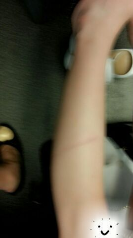

| 2013/09 02 Mon | 皆さんの、健康のため意識して食 べる様にしてる食べ物って何ですかぁ〜♪ (ｏ・ω・)ノ))？？ ろってぃ-☆ |
皆 こんちゃんわ (( (・ω・)/
Rottyだお ！

昨日は 京都で個別握手会を
してきました( 〃▽〃)
会場へ足を運んでくださった方
本間にありがとう！！
天気悪かったから
『皆大丈夫？来れるんかなあ？？』
思っててん(>_<)
雨大丈夫でしたかん(´▽`)？？
昨日も 皆に会えて本間に
嬉ちかった 。
わ〜い わ〜い\(о´∀`о)/
昨日、握手会 初めましてやった方も
これからよろちくねんねん♪
もっともっと 皆と色々
おしゃべりしたぁ〜い(／▽＼)♪
スリッパ履いて握手会したら
動き回れてめっちゃ楽しかった。
いやん(*ノ▽ノ)
２期生ちゃん,〜*じゅんなちゃん*〜と

朝 京都へ向かう新幹線で
寝ちゃってて起きたら
足に凄いかたがついてたよ\(・ω・)/
それだけなの アハッ☆

ぢゃあまた更新するねー。
(^з^)-☆
コメント(259)
2013/09/02 11:24